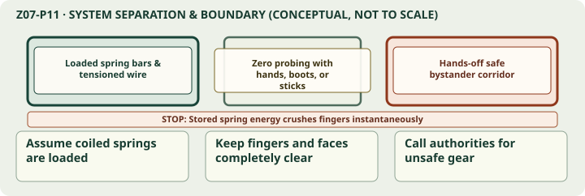

Z07-P11 · Traps and snares · New manuscript
Stored Mechanical Spring-Energy and Crush-Injury Hazards
Recognize the extreme mechanical pinch and fracture hazards stored in compressed trap springs encountered in the field.
When it applies · Bystander safety when encountering unknown metal hardware along shorelines or woods.
Equipment · Distance and observation only—do not probe with sticks or hands.

Actions
- Treat any metal frame, coiled spring, hinged bar, or tensioned wire discovered outdoors as actively loaded with high stored mechanical energy.[L09, L11]
- Never test a suspected trap by poking it with a boot, stick, or hand because sudden high-speed bar closure throws mud/splinters into eyes and crushes fingers or wrists.[L09, L11]
- Keep children and bystanders well back and contact Minnesota DNR Conservation Officers if a hazardous device sits unlawfully on a public trail or park.[L07, L09]
Failure recognition · Poking a concealed spring frame with a short stick causes instantaneous snap-back trauma to hands or eyes.[L09, L11]
Verify · Bystanders keep hands, boots, and tools strictly away from discovered mechanical hardware and route wide around it.[L09, L11]
Stop or change course · Stop approaching immediately and call 911 or EMS if a human hand or limb is caught in a high-force spring device.[L09, L11, M01]
Evidence and editorial notes
- L07 · Minnesota DNR · Scientific and Natural Areas Visitor Rules and Prohibitions (Current web edition)
- Section: Hunting and trapping · Conditions: Minnesota SNA and adjacent state land
Support: Verify the current rules for the precise site. Minnesota DNR lists trapping rules by SNA.
Limitations: Use separate state-park, recreation-area, and other land rules. Private permission does not supersede law. · Conflicting evidence: Conditions are recorded in the A03 audit.
Editorial note: Clarifies where bystanders/pets may encounter lawful sets. · Specialist reviewer: Public-lands manager
Primary source · checked 2026-11-25 - L09 · Minnesota DNR · Turn In Poachers (TIP) and Conservation Officer Reporting (Current web edition)
- Section: Reporting illegal, unmarked, or abandoned traps and snares · Conditions: Encountering suspected unlawful, out-of-season, or unsafe sets
Support: Do not touch, spring, or steal equipment; photograph from a safe distance with location coordinates and report to MN DNR TIP or local law enforcement.
Limitations: Tampering with lawful traps can be illegal and risks severe hand injury from stored spring energy. · Conflicting evidence: None noted.
Editorial note: Protects bystanders from injury and legal liability. · Specialist reviewer: Conservation enforcement reviewer
Primary source · checked 2026-11-25 - L11 · Association of Fish & Wildlife Agencies · Best Management Practices for Trapping and Furbearer Welfare (Current web edition)
- Section: Conceptual classification of historic vs regulated capture categories · Conditions: Educational overview of mechanical hazard types without construction specs
Support: Historical and regulated devices fall into restraining (foothold, cage, cable restraint) and killing (body-grip) hazard classes with distinct spring-energy risks.
Limitations: Conceptual awareness supports hazard recognition only and must never include trigger dimensions, wire specs, or placement instructions. · Conflicting evidence: None noted.
Editorial note: Enforces Z07 no-actionable-construction editorial boundary. · Specialist reviewer: Safety and wildlife ethics reviewer
Primary source · checked 2026-11-25 - M01 · American College of Surgeons · STOP THE BLEED Training Course (current web edition)
- Section: Ensure Your Own Safety; Find Life-Threatening Bleeding; Compress · Conditions: Lay responder encountering severe external hemorrhage
Support: Ensure scene safety first, call 911, expose the wound to locate life-threatening bleeding, and apply firm continuous direct pressure with clean gauze or cloth.
Limitations: Does not replace formal hands-on Stop the Bleed training or EMS trauma care. · Conflicting evidence: None across ACS/ARC guidelines.
Editorial note: Separates life-threatening arterial/venous hemorrhage from minor scrapes. · Specialist reviewer: Wilderness medicine and trauma EMS
Primary source · checked 2026-11-24
Source lineage · New manuscript (Z07 P18 human hazards) · Classification · New manuscript.